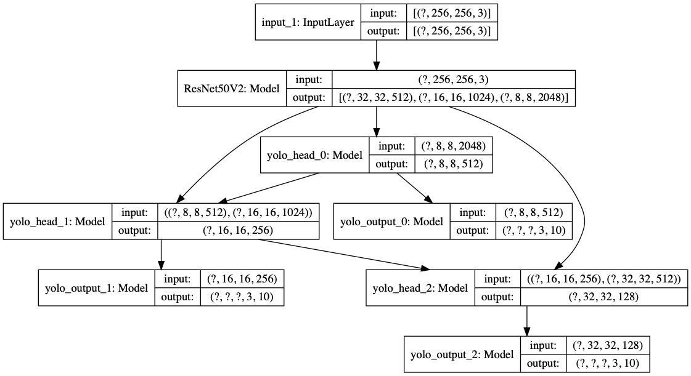
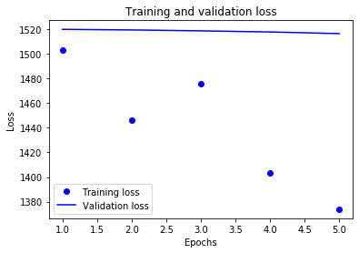
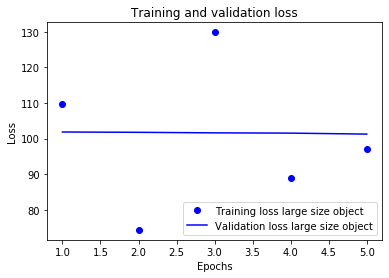
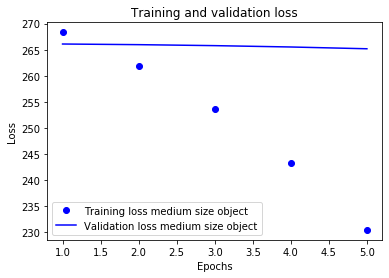
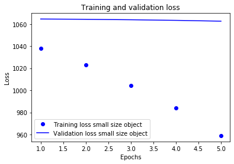

[1]:
import sys
# add the code path
sys.path.append('..')
[2]:
%load_ext autoreload
%autoreload 2
Sample to train Yolo for object detection¶
[3]:
from ultrayolo import YoloV3, callbacks
from ultrayolo import datasets
from pathlib import Path
import tensorflow as tf
from ultrayolo import losses
import matplotlib.pyplot as plt
Define the parameters for the run
[5]:
image_shape = (256,256,3)
batch_shape = 4
max_objects = 100
train_dataset_path = '../tests/data/manifest.txt'
anchors = datasets.load_anchors('../tests/data/yolov3_anchors.txt')
classes = datasets.load_classes('../tests/data/classes.txt')
Create the model
[6]:
model = YoloV3(image_shape, max_objects,
anchors=anchors, num_classes=len(classes),
training=True, backbone='ResNet50V2')
[7]:
tf.keras.utils.plot_model(model.model, show_shapes=True)
[7]:

Make optimizer and loss
[8]:
optimizer = model.get_optimizer('adam', 1e-4)
model_loss = model.get_loss_function()
24588 MainThread using adam optimize
[9]:
model_loss
[9]:
[yolo_loss0 at 0x15d7d0490,
yolo_loss1 at 0x157e41a90,
yolo_loss2 at 0x157e41e10]
compile the model
[10]:
model.compile(optimizer, model_loss, run_eagerly=True, summary=False)
Create the dataset
[12]:
train_dataset = datasets.YoloDatasetMultiFile(
train_dataset_path, image_shape, max_objects, batch_shape,
model.anchors, model.masks, len(classes)
)
[13]:
print('num batches', len(train_dataset))
num batches 1
Create the callbacks
[14]:
model_callbacks = callbacks.default_callbacks(model,
run_path='./checkpoints', lrate_mode='exp_range',
lrate_value=1e-4, verbose=0)
Set the model in transfer mode
[15]:
model.set_mode_transfer()
37651 MainThread freeze backbone
[16]:
history = model.fit(train_dataset, train_dataset, 5, callbacks=model_callbacks)
38059 MainThread training for 5 epochs on the dataset /Users/fumarolaf/git/tfyolo3/notebooks/../tests/data
Train for 1 steps, validate for 1 steps
Epoch 1/5
1/1 [==============================] - 9s 9s/step - loss: 1503.2344 - yolo_output_0_loss: 109.7905 - yolo_output_1_loss: 268.3429 - yolo_output_2_loss: 1037.7290 - val_loss: 1519.8442 - val_yolo_output_0_loss: 101.8549 - val_yolo_output_1_loss: 266.0881 - val_yolo_output_2_loss: 1064.5364
Epoch 2/5
1/1 [==============================] - 7s 7s/step - loss: 1446.4153 - yolo_output_0_loss: 74.3568 - yolo_output_1_loss: 261.9007 - yolo_output_2_loss: 1022.7929 - val_loss: 1519.3585 - val_yolo_output_0_loss: 101.7645 - val_yolo_output_1_loss: 265.9644 - val_yolo_output_2_loss: 1064.2737
Epoch 3/5
1/1 [==============================] - 5s 5s/step - loss: 1475.4344 - yolo_output_0_loss: 129.8671 - yolo_output_1_loss: 253.6545 - yolo_output_2_loss: 1004.5569 - val_loss: 1518.6138 - val_yolo_output_0_loss: 101.6138 - val_yolo_output_1_loss: 265.7768 - val_yolo_output_2_loss: 1063.8726
Epoch 4/5
1/1 [==============================] - 7s 7s/step - loss: 1403.5203 - yolo_output_0_loss: 88.9308 - yolo_output_1_loss: 243.3614 - yolo_output_2_loss: 983.8774 - val_loss: 1517.7263 - val_yolo_output_0_loss: 101.5380 - val_yolo_output_1_loss: 265.5177 - val_yolo_output_2_loss: 1063.3215
Epoch 5/5
1/1 [==============================] - 6s 6s/step - loss: 1373.8488 - yolo_output_0_loss: 97.0849 - yolo_output_1_loss: 230.4656 - yolo_output_2_loss: 958.9492 - val_loss: 1516.3846 - val_yolo_output_0_loss: 101.2649 - val_yolo_output_1_loss: 265.1777 - val_yolo_output_2_loss: 1062.5885
Evaluate model Loss¶
[17]:
loss = history.history['loss']
val_loss = history.history['val_loss']
epochs = range(1, len(loss) + 1)
# "bo" is for "blue dot"
plt.plot(epochs, loss, 'bo', label='Training loss')
# b is for "solid blue line"
plt.plot(epochs, val_loss, 'b', label='Validation loss')
plt.title('Training and validation loss')
plt.xlabel('Epochs')
plt.ylabel('Loss')
plt.legend()
plt.show()

Yolo loss for large-sized objects¶
[18]:
loss = history.history['yolo_output_0_loss']
val_loss = history.history['val_yolo_output_0_loss']
epochs = range(1, len(loss) + 1)
# "bo" is for "blue dot"
plt.plot(epochs, loss, 'bo', label='Training loss large size object')
# b is for "solid blue line"
plt.plot(epochs, val_loss, 'b', label='Validation loss large size object')
plt.title('Training and validation loss')
plt.xlabel('Epochs')
plt.ylabel('Loss')
plt.legend()
plt.show()

Yolo loss for medium-sized objects¶
[19]:
loss = history.history['yolo_output_1_loss']
val_loss = history.history['val_yolo_output_1_loss']
epochs = range(1, len(loss) + 1)
# "bo" is for "blue dot"
plt.plot(epochs, loss, 'bo', label='Training loss medium size object')
# b is for "solid blue line"
plt.plot(epochs, val_loss, 'b', label='Validation loss medium size object')
plt.title('Training and validation loss')
plt.xlabel('Epochs')
plt.ylabel('Loss')
plt.legend()
plt.show()

Yolo loss for small-sized objects¶
[20]:
loss = history.history['yolo_output_2_loss']
val_loss = history.history['val_yolo_output_2_loss']
epochs = range(1, len(loss) + 1)
# "bo" is for "blue dot"
plt.plot(epochs, loss, 'bo', label='Training loss small size object')
# b is for "solid blue line"
plt.plot(epochs, val_loss, 'b', label='Validation loss small size object')
plt.title('Training and validation loss')
plt.xlabel('Epochs')
plt.ylabel('Loss')
plt.legend()
plt.show()
